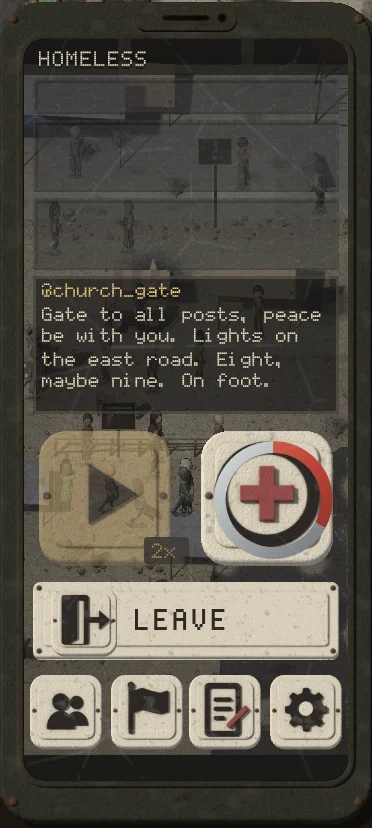
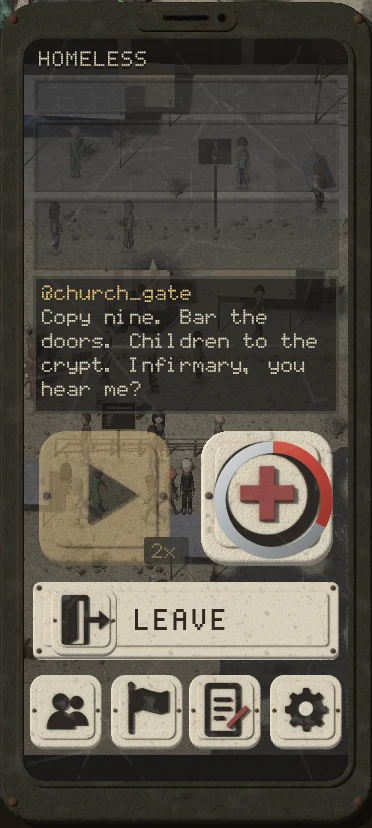
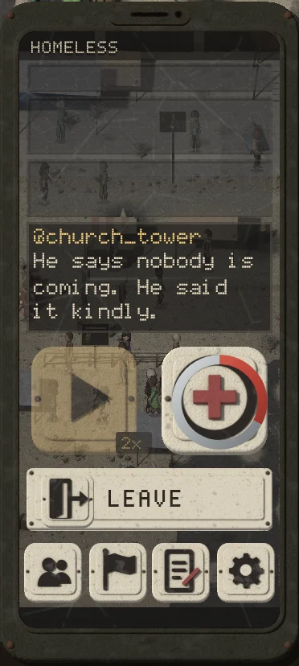

THE RADIO LIVES IN THE FEED
When a town you hold falls, its people post it on your phone's feed, one line at a time, and nothing else shows until it ends. The radio's sounds stay, and now also play under the feed's big posts.
THE REAL DEMO, THE CHURCH FALLING



PLAY IT: THE GAME'S RECORDING, ITS POSTS
@valleyThe valley is quiet.
An ordinary post waiting: none.
UNDER THE FEED'S BIG POSTS
Same feed, same look, no radio screen. Every word is records/target/bb/radio_lines.json; every sound is slices/radio/fall.mp3.